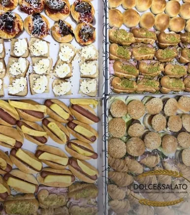

Catering a Mascalucia: rustici, dolci mignon e buffet per le tue feste
Dolce&Salato prepara il catering per compleanni, lauree, aperitivi, battesimi e feste di famiglia a Mascalucia: rustici mignon da € 12,00 al kg, pasticceria mignon di nostra produzione a € 14,00 al kg, schiacciate, torte e semifreddi. Dicci per quante persone è la festa: ti consigliamo noi cosa e quanto ordinare, poi lo prepariamo e lo ritiri in Via Tremestieri 54.

Dicci per quante persone
Basta sapere che festa è e quanti ospiti avete: ti consigliamo noi cosa e quanto ordinare e ti diciamo il prezzo.
- Dicci che festa è e per quante persone.
- Ricevi la nostra proposta con il prezzo.
- Ritira in negozio all'orario che concordiamo.
Cosa puoi mettere in tavola
I prezzi sono al kg. Le quantità giuste le decidiamo insieme in base agli ospiti.
Rustici mignon
Schiacciate
Pasticceria mignon, torte e semifreddi
Anche per la festa: pizza a teglia e mezza teglia (vedi la pagina pizza a Mascalucia) e tavola calda a pezzi da € 0,80 (cartocciate, pizzette, arancini). Una torta per il compleanno? Guarda le torte su ordinazione.
Catering per ogni occasione
Ogni festa ha il suo tavolo. Scegli la tua e vedi cosa si ordina di solito.
Come funziona il catering Dolce&Salato
Prepariamo tutto nel nostro laboratorio di Via Tremestieri 54, a Mascalucia: il pane, i rustici, la pasticceria mignon e le torte sono di nostra produzione. I prezzi sono al chilo, quindi paghi quello che ordini. Non c'è un minimo da leggere in un listino: ci dici data e numero di persone, noi ti proponiamo cosa e quanto ordinare e ti diamo il prezzo prima di confermare.
L'ordine si ritira in negozio all'orario che concordiamo. Se ti serve la consegna, chiedici se è possibile per la tua zona e per la tua data. Clienti di Tremestieri Etneo, San Giovanni la Punta, Gravina di Catania, Nicolosi e Catania ci scelgono per le feste: scrivici anche da lì.
Meglio ordinare con qualche giorno di anticipo, soprattutto nei weekend e nei periodi di lauree e cerimonie. Scrivici la data e ti diciamo subito se è libera.
Domande sul catering
Quanto costa il catering di rustici a Mascalucia?
Si paga a peso. I rustici mignon partono da € 12,00 al kg (focacce, mini hot dog, pizza secca, rustici classici), gli arancinetti burro o ragù costano € 14,00, mini hamburger, rustici di sfoglia, mini burger e mini cornetti con crudo € 16,00, arancinetti al pistacchio, mini cornetti al salmone e mini mafaldine € 18,00. La pasticceria mignon di nostra produzione costa € 14,00 al kg.
Quanto ordinare per la mia festa?
Ci dici per quante persone è la festa e che tipo di occasione è: ti consigliamo noi cosa e quanto ordinare e ti diciamo il prezzo.
Come ordino il catering per una festa?
Chiama o scrivi su WhatsApp al 351 5571151. Dicci la data, quante persone siete e cosa ti piacerebbe. Ti confermiamo disponibilità e prezzo.
Posso scegliere i gusti?
Sì. Dicci cosa ti piace tra rustici, pasticceria mignon, schiacciate, torte e semifreddi e lo mettiamo nell'ordine.
Per quali occasioni si può ordinare?
Compleanni, lauree, aperitivi, buffet e feste di famiglia o di lavoro: se serve del cibo per più persone, scrivici.
Fate catering a Mascalucia e nei paesi vicini?
Siamo a Mascalucia, in Via Tremestieri 54. Ci scrivono per le feste anche da Tremestieri Etneo, San Giovanni la Punta, Gravina di Catania, Nicolosi e Catania. Il ritiro è in negozio; per la consegna chiedici disponibilità.
Con quanto anticipo devo ordinare?
Meglio con qualche giorno di anticipo, soprattutto nel fine settimana. Scrivici la data e ti diciamo subito se è libera.
Come si ritira l'ordine?
Gli ordini si ritirano in negozio, in Via Tremestieri 54 a Mascalucia, all'orario che concordiamo con te.
Ti serve altro?
Siamo in Via Tremestieri, 54, 95030 Mascalucia (CT). Aperti lun–sab 6:30–21:30 e domenica 6:30–13:30.